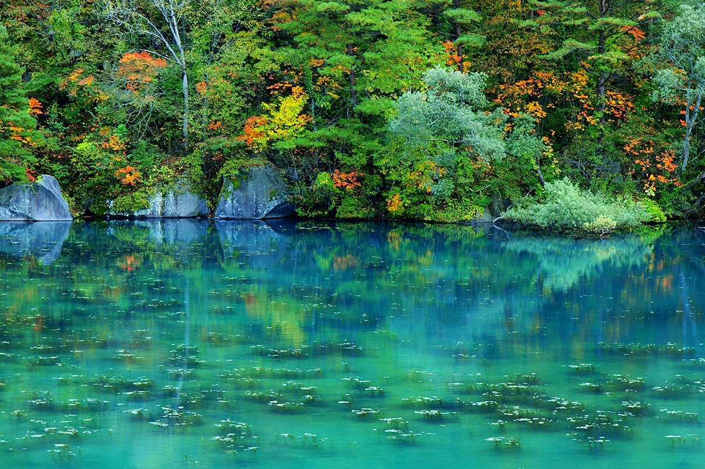
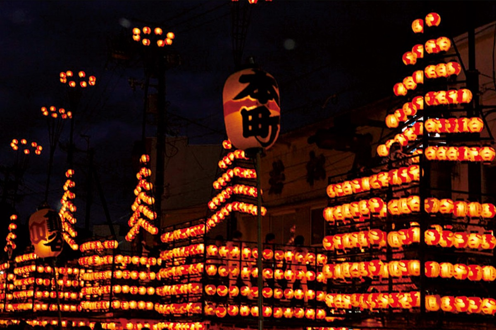
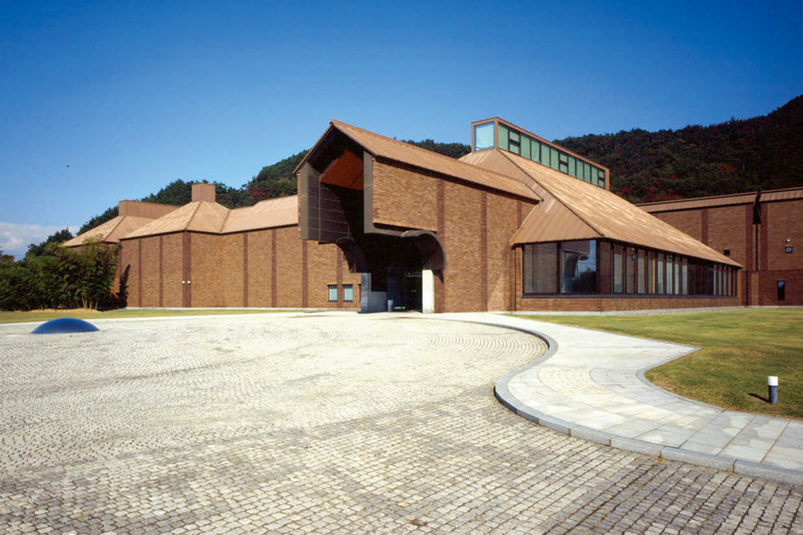
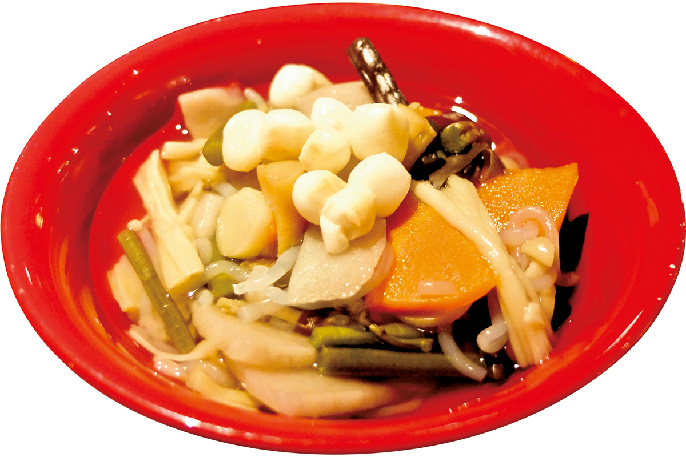
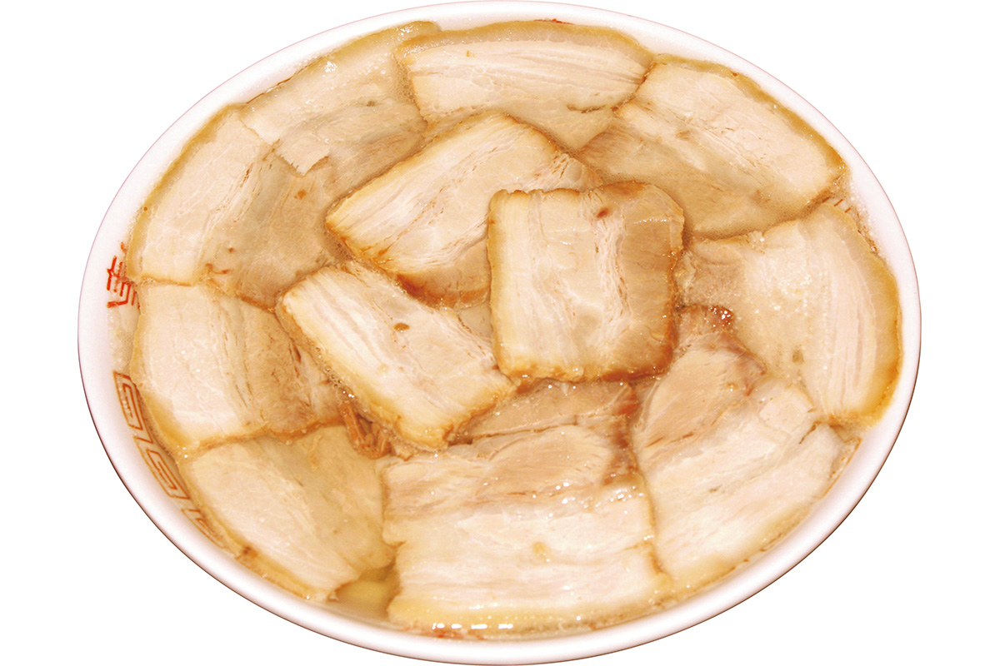
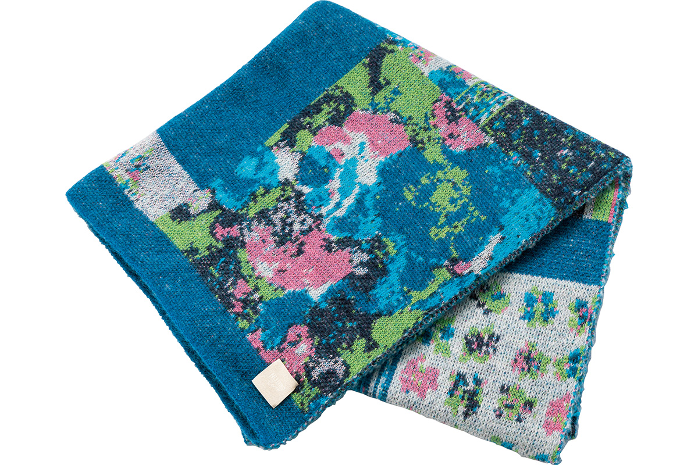
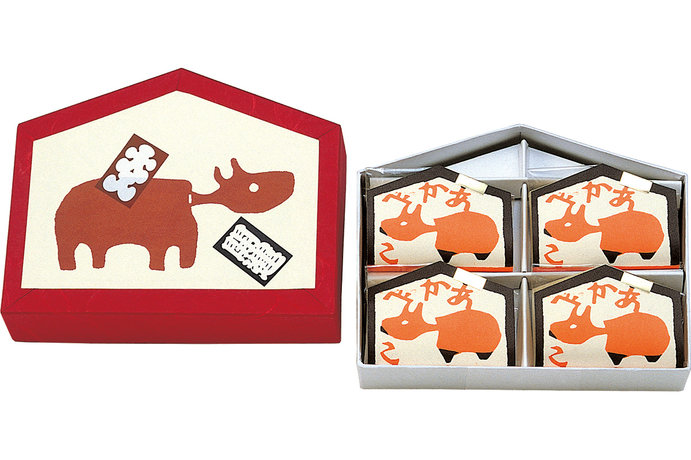
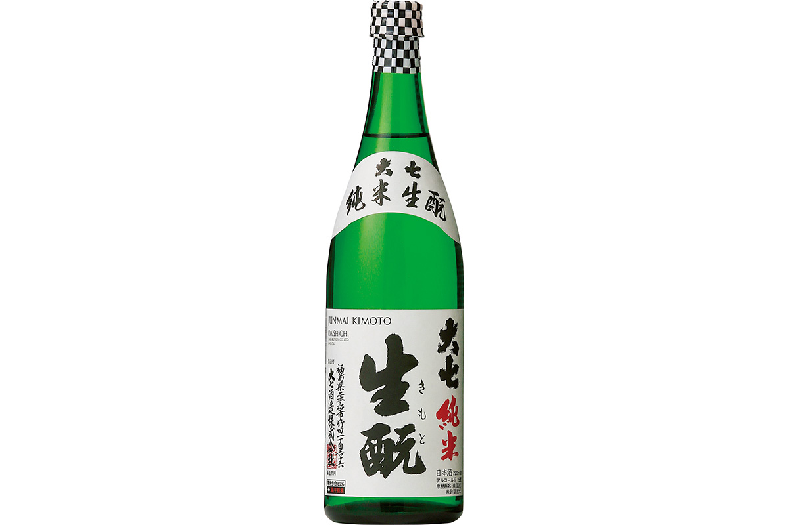

Префектура Фукусима
Фукусима: разноцветные озёра, густая лапша и фонари над улицей

Вода в пруду прозрачно-бирюзовая, сквозь неё видны подводные растения, а по берегу стоят деревья, уже тронутые осенью.
В этой префектуре к северу от столицы растят лучшие персики страны, варят плотную лапшу с чашу, а осенью выкатывают на улицы повозки, увешанные сотнями фонарей. Рассказываем, за чем ехать в Фукусиму.
О префектуре
Три разных края в одной префектуре
Фукусима лежит на самом юге Тохоку, то есть северо-востока главного острова, и её называют воротами этих земель. По площади она уступает только Хоккайдо и Иватэ, а хребет Оу и возвышенность Абукума делят её на три части: Хамадори вдоль моря, Накадори в центре и Айдзу в горах. Даже язык и обычаи в этих краях отличаются, так что, перебравшись через горы, можно услышать совсем другую речь.
Название префектуры связывают с городком Фукусима, где стояла управа, а есть версия, что около 1593 года здесь поставили замок под тем же именем. Земля эта известна как фруктовый край: персики сорта «акацуки», груши, виноград, яблоки. По производству фруктов префектура в первых рядах страны, а по потреблению их на душу населения и вовсе первая, поэтому садов, где можно собирать фрукты самим, здесь много.
К северу от города лежит вулкан Бандай-сан и область Урабандай, знаменитая озёрами и болотами: это одно из лучших высокогорных мест отдыха в стране. Сюда едут летом за прохладой, а зимой кататься на лыжах и сноуборде.
Что посмотреть
Вода цвета драгоценного камня
Пять цветных озёр и вулкан Бандай-сан
Это главный пейзажный край префектуры. Озёра Госйкинума, то есть «пять цветных озёр», разбросаны у подножия вулкана Бандай-сан: вода в них разного оттенка, потому что в ней растворены разные минералы, и цвет меняется с погодой. Рядом, среди буковых лесов, стоит озеро Хибара-ко и небольшие болота, куда за цветением приезжают летом.
- Справки
- туристическая ассоциация Урабандай
- Телефон
- +81 241-32-2349
Что ещё посмотреть
- Гора Бандай-асан, вулкан, у подножия которого лежат озёра
- Замок Цуруга-дзё, крепость в Айдзу с башней над городом
- Оути-дзюку, деревня почтового тракта с домами под соломой
Праздники
Триста семьдесят лет фонарей
Праздник фонарей в Ниппонмацу
Этот праздник начал около 370 лет назад даймё Нива Мицусигэ. В первый вечер праздника семь барабанных платформ важно ходят по улицам города, а сами повозки увешаны сотнями бумажных фонарей, которые здесь зажигают вручную, и вечером город буквально светится изнутри.

- Период
- начало октября
- Место
- кварталы Хонтё, Камэгай, Такэда, Мацуока, Нэдзаки, Вакамия и окрестности, город Ниппонмацу
Другие праздники
- Босое шествие в храме Нанайдō, зимнее шествие по обряду
- Сома-но харамасэ, конные и пешие состязания
- Праздник Отоя в Тадзиме, старинное шествие у святилища
Музеи и архитектура
Дом искусства у горы
Художественный музей префектуры Фукусима
Музей стоит у горы Синояма, где много зелени. Здание проектировала мастерская Отака, и его узнают по тяжёлым, будто высеченным формам, а центральный зал поднят высоко и держит много света.

- Адрес
- 1 Moriai-nishiyōzan, Fukushima, Fukushima
- Телефон
- +81 24-531-5511
Что ещё посмотреть
- Городской музей искусств Иваки, живопись и графика
- Аквариум «Аквамарин», морская экспозиция на берегу океана
- Выставочный центр «Биг Палет», площадка для ярмарок и концертов
Местная кухня
Суп, в котором всё считают по нечётному счёту
Кодзую
Это суп, который готовят в Айдзу: в него кладут много всего, а главный вкус дают сушёные гребешки. В этих краях есть обычай складывать число добавок в супе с нечётным числом, потому что нечётные числа считаются счастливыми.

Что ещё попробовать
- Добу-дзиру, густой суп из рыбы с пастой мисо
- Якисоба из Намиэ, жареная лапша с густым соусом
- Рамен из Сиракавы, лапша на прозрачном бульоне с ломтиками мяса
Где поесть
Лапша, из-за которой встают в семь утра
Столовая «Баннай»
Это один из самых известных домов лапши по-китакатски, он работает больше шестидесяти лет. Основа бульона здесь свиная, но он остаётся светлым и негустым, лапша широкая и слегка волнистая, а сверху кладут много свинины, приготовленной в доме. Порцию с горой мяса здесь так и называют, мясной лапшой.

- Адрес
- 7230 Hosoda, Kitakata, Fukushima
- Телефон
- +81 241-22-0351
- Часы
- с 7:00 до 18:00
- Выходные
- четверг
Ремёсла
Тёплый трикотаж из города Датэ
Трикотаж «Датэ-сэн»
Этот промысел родился в городе Датэ: вязаное полотно здесь начали делать ещё в конце XIX века, когда в городе открыли мастерскую, и с тех пор трикотаж стал одной из визитных карточек края. Сегодня здешние нити и свитера продают по всей стране и за её пределами.

Что привезти
Сладость в форме дощечки с пожеланием
Вагаси «акабэко» от кондитерской «Айдзу-аои»
Кондитерская выросла из чайной лавки, которая в княжеские времена поставляла чай ко двору Айдзу. Сладость названа по легенде о красной корове акабэко и делается в виде деревянной дощечки с написанным желанием; одна коробка из восьми штук стоит 1250 иен.

- Справки
- главная лавка кондитерской «Айдзу-аои»
- Телефон
- +81 120-26-7010
- Сайт
- aizuaoi.com
Сакэ «Дайсити дзюммай кимото»
Завод работает с 1752 года и держится старинного способа кимото, то есть закваски, которую готовят прямо в чане, а не добавляют готовую. Такой способ требует больше времени и труда, зато даёт сакэ глубокого вкуса; бутылка 720 миллилитров стоит 1400 иен.

- Телефон
- +81 243-23-0007
- Сайт
- daishichi.com
Где остановиться
Гостиница, придуманная как сказка
«Ото́ги-но ядо Ёнэя»
Эту гостиницу в сельской местности построили так, будто она вышла из сказки. И в главном доме, и во флигеле в каждом номере есть свой ванный чан, который наполняют прямо из источника, а на ужин подают парадный набор блюд на органических овощах.
- Адрес
- 168-2 Iwabuchi Kasagi, Sukagawa, Fukushima
- Телефон
- +81 248-62-7200
- Комнат
- 23: 12 в корпусе «Сказочный холм» и 11 в корпусе «Сказочная деревня»
- Цена
- от 27 000 иен за ночь с двумя приёмами пищи и обслуживанием, налоги и банный сбор отдельно
- Сайт
- e-yoneya.com
Местный диалект
Как здесь говорят «очень вкусно»
- умэгараочень вкусно
- кё ва хонто ни поопои насегодня правда тепло
- надзё ситэ иига ва ганнэгаттане знал, как поступить
- сэнсэй ни онцарэру дзоучитель тебя отругает
Рекорды
В чём Фукусима первая
- №1 производство павловнии кири: первое место в стране
- №1 число золотых медалей на общенациональной дегустации сакэ: первое место
- №1 расходы на натто в городе Фукусима: первое место в стране
Вопросы и ответы
Что ещё спрашивают о Фукусиме
Какая необычная начинка бывает у темпуры в Айдзу?
Мандзю, то есть сладкая лепёшка. В Айдзу маленькие лепёшки с фасолевой пастой обмакивают в кляр и жарят; такое угощение подают гостям и на праздники. Снаружи оно хрустит, а внутри остаётся густая паста, и вкус получается совсем иным.
Какую игрушку придумали, чтобы отводить болезни и беды?
Акабэко, красную корову. Это самая известная игрушка Айдзу, у которой качается голова: считается, что её начали делать около четырёхсот лет назад по приказу Гамо Сатохидэ. Как «корову, приносящую счастье», её любят очень многие.
Справочник
Фукусима в цифрах
Общие сведения
| Административный центр | Фукусима |
| Муниципалитеты | 13 городов, 31 посёлок, 15 деревень |
| Площадь | 13 784 кв. км |
| Население | 1,86 млн человек |
| Плотность населения | 135,2 человека на кв. км |
| Туристов в год | 11,81 млн |
| Дерево префектуры | дзельква кэяки |
| Цветок префектуры | рододендрон немото-сякунагэ |
| Птица префектуры | синяя мухоловка кибитаки |
Климат
| Средняя температура | +14,2 |
| Максимум | +33,4 |
| Минимум | минус 2,4 |
| Осадки | 828 мм |
| Ясных дней | 14 |
| Дождливых дней | 101 |
| Снежных дней | 73 |
Для путешественника
| Онсэнов | 136 |
| Гостиниц и рёканов | 1581 |
| Музеев искусств | 7 |
| Музеев | 80 |
| Митиноэки, придорожных станций | 33 |
| Национальные сокровища | зал Амида-до и другие |
| Важных культурных ценностей | 103, из них 3 национальных сокровища |
| Исторических мест | 52 |
| Живописных мест | 5 |
| Природных памятников | 25 |
| Национальные парки | Бандай-Асахи, Никко, Одзэ, Этиго-Сандзан-Тадами, всего 4 |
Природные памятники
- Большой кипарис в Савадзири, огромное старое дерево
- Пегматитовая жила у святилища Касима, редкая геологическая порода
- Большое дерево в Такасэ, старое дерево у дороги
- Пещера Иримидзу, известняковая пещера с подземной водой